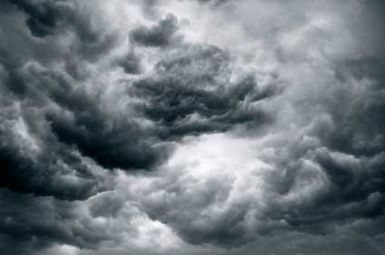

Standing before the United Nations General Assembly in October 1987, Maumoon Abdul Gayoom, President of the Maldives, made an appeal representing “an endangered nation.” That year, for the first time, “unusual high waves” in the Indian Ocean inundated a quarter of the urban area on the capital island of Male’, flooded farms and washed away reclaimed land. Gayoom cited scientific evidence that human activities were releasing greenhouse gases that warm the planet, ultimately raising global sea level as glaciers melt and warmer water expands. The trouble extended beyond small islands; studies showed that rising seas would wreak havoc on the U.S. Gulf Coast, the Netherlands, and the river deltas of Egypt and Bangladesh.
Fast-forward through two decades of swelling seas and more powerful storms and the call has moved from the need to study global warming to the necessity of dramatic action to stabilize climate. With small island nations in peril, these days President Gayoom evokes the vision of a United Nations where “name plates are gone; seats are empty.” He does not speak alone: this fall, some 50 countries, including a number of small island nations along with Australia, Canada, New Zealand, and the European Union, are planning to put a resolution before the U.N. General Assembly requesting that the U.N. Security Council address “the threat posed by climate change to international peace and security.” As Ambassador Stuart Beck of Palau has asked, “Would any nation facing an invading army not do the same?”
Without a dramatic reduction in emissions of greenhouse gases like carbon dioxide, the global average temperature is projected to increase by up to 12 degrees Fahrenheit (6.4 degrees Celsius) and sea level could rise some 3 feet (1 meter) by the end of this century. Alarmingly, recent accelerated melting on the Greenland and West Antarctic ice sheets - which together contain enough ice to raise global sea level by 39 feet - means that seas could rise even faster than predicted.
The warming of the globe also provides more energy to fuel stronger storms. More-powerful storms can combine with even a modest rise in sea level in a dangerous synergy, allowing for ever larger storm surges that can flatten coastal communities. Because much of humanity, including many residents of the world’s major cities like Kolkata (Calcutta), London, Shanghai and Washington, DC, are located in vulnerable coastal areas, hundreds of millions of people are directly at risk. A large part of the New York metropolitan area is less than 15 feet above sea level; a Category-3 hurricane could easily swamp a third of lower Manhattan.
All together, one out of every 10 people on the planet lives in a coastal zone less than 33 feet above sea level. If higher seas and extreme weather render these areas uninhabitable, more than 630 million people could be left searching for safer ground. Yet no place in the world is equipped to deal with mass population movements or can accommodate millions of climate refugees. Fragile countries already stretched to their limits could be pushed past the breaking point into complete state failure. As British Foreign Secretary Margaret Beckett warned the U.N. Security Council, the risk of massive economic disruption and “migration on an unprecedented scale” make climate change a true security threat.
Already the exodus has begun. On Vanuatu’s Tegua island in the South Pacific, a coastal village of 100 people has been relocated inland as erosion and rising seas raised the underground water table, flooding dwellings and overflowing pit toilets. Papua New Guinea’s Carteret Islands, with maximum elevation 5 feet above sea level, are set to transplant their 2,000 residents, 10 families at a time, to Bougainville Island, a four-hour boat ride away. The Maldives and Kiribati, both under siege by the inland creep of the tides, have plans to move people from the more vulnerable small islands to larger islands.
Beyond small islands, river deltas are particularly at risk. Category-3 Cyclone Nargis made this clear when it hit Burma’s Ayeyarwady Delta in May 2008. The storm brought fierce winds and a 12-foot storm surge that killed 135,000 people and damaged 9,000 square miles (23,500 square kilometers), including over 60 percent of the country’s rice fields. More than 2 million people felt the impact; five months after the event, close to half of them were still relying on food aid.
Vietnam is directly exposed to sea level rise, with some 18 million people - one fifth of the population - living in the susceptible Mekong Delta. The production of more than half the country’s rice and most of its fish and shrimp depends on seasonal flooding in this area; the risk, however, is that higher seas could alter the regular flooding regime, expanding the area inundated with salty water and rendering cropland unusable. A 3-foot rise in sea level would cover close to half the delta’s land area. Since 2000, when the worst flooding in at least two generations raised the Mekong waters more than 16 feet, the Vietnamese government has embarked on a program to resettle at least 33,000 families out of the most flood-prone areas.
For Egypt’s Nile Delta, a 3-foot rise in sea level could displace close to 8 million people and flood 12 percent of the country’s agricultural area. Natural barriers to the encroaching sea are being lost because the Aswan Dam blocks sediment deposits that otherwise would sustain the delta. Salty ocean water already makes its way onto farmland, hampering wheat production. Concrete barriers line the harbor of the ancient city of Alexandria, but they cannot always keep the waves at bay.
Higher seas could also prove disastrous for densely populated Bangladesh’s 161 million residents, many of whom already suffer from annual flooding. A 3-foot sea level rise would submerge close to half the country’s rice fields and displace tens of millions of people. India has built a fence on the border with Bangladesh to stave off illegal migration, but if the rise of the ocean is not stopped, concrete and barbed wire are unlikely to prevent the flows of climate migrants.
While small islands and low-lying developing countries seem the likely first fronts for environmental evacuation, industrial countries are not immune. Hurricane Katrina, which hit the already-subsiding Louisiana coast in late August 2005 with heavy winds and a 28-foot storm surge, forced the evacuation of close to 1 million residents of New Orleans and the surrounding area. Of those who left, more than 200,000 never returned. They took up permanent residence elsewhere, becoming the first major wave of U.S. climate refugees.
Following Katrina, a $125 billion disaster, major U.S. population centers have largely dodged the bullet of tropical storms. In September 2008, Hurricane Gustav urged the temporary evacuation of New Orleans before it changed course and softened its blow. Hurricane Ike, a storm remarkable in size and wind speed, fortunately weakened before making U.S. landfall, but still ravaged Galveston, Texas. The two storms arrived after tearing through Cuba (long a paragon of evacuation and return), damaging more than 440,000 homes and temporarily displacing more than 1 million people.
With climate change fueling stronger storms and taking them outside of their traditional zones and seasons, people face the difficult choice of rebuilding or moving to safer territory. In the United States, while more and more people are moving to vulnerable coastal areas, insurance companies are retreating, unwilling to pick up the hefty tab of future weather devastation.
If we allow global warming to spiral out of control, at what point could disaster fatigue completely overwhelm financial and social systems? Today we measure the early waves of rising sea refugees in the thousands, but unless we can quickly check the rise in greenhouse gas emissions, we may one day measure them in the millions.
Sign up for the Earth Policy News e-mail list. You’ll receive Eco-Economy Updates, Eco-Economy Indicators and Book Bytes. You’ll also get our press releases and learn about our new books as we release them. This is a low-traffic list.
Copyright © 2008 Earth Policy Institute
|
 ISTOCKPHOTO Small islands are already losing reclaimed land to "unusual high waves," sounding the alarm for the potential dangers of the rising sea levels and increasingly powerful storms caused by global warming. |
|
|